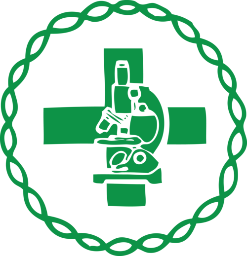

BIOMEDICINA
O que é Biomedicina e o que faz
um Biomédico?
O Biomédico só será chamado de doutor caso ele tenha feito
doutorado. Ao realizar qualquer uma graduação, vai receber o título
de Bacharel em Biomedicina. Enquanto o médico é preparado para
atuar diretamente com pacientes, o Biomédico trabalha na
causa de doenças.
Muita gente se pergunta o que é Biomedicina. Você já parou para
pensar o que esse profissional faz? Se ainda não sabe a resposta,
está no lugar certo. Aqui vamos te explicar o que é Biomedicina,
como funciona a graduação e suas áreas de atuação.
O curso de Biomedicina é uma graduação da área
da saúde que junta em uma única formação, conhecimentos biológicos e médicos.
É graças à Biomedicina que várias doenças e epidemias, que poderiam matar milhões de pessoas, foram controladas.